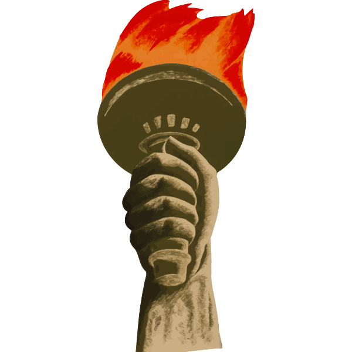
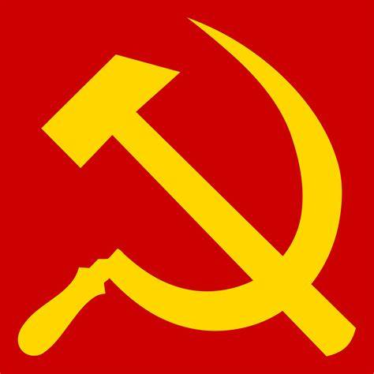

Dimplomacy
In politics, diplomacy refers to the art and practice of managing international relations through dialogue, negotiation, and other peaceful means to influence foreign governments and resolve conflicts without violence.
how to get good at diplomacy
1: Active Listening and Curiosity:
Prioritize understanding what other parties and constituents truly value rather than aggressively pushing a single agenda. Ask open-ended questions to uncover underlying motivations
2: Honesty and Credibility:
Maintain a reputation for reliability. Diplomacy fails when trust is broken; if you cannot commit to a policy or vote, be direct about your boundaries rather than making hollow promises.
3: Understanding Diverse Values:
Effective leaders examine what drives different groups, constituencies, or nations—recognizing their specific priorities, cultures, and constraints
4: Negotiation and Compromise:
Diplomacy relies on finding common ground, offering mutual incentives or trade-offs, and moving forward through incremental agreements rather than hardline, all-or-nothing ultimatums
Sometimes it's good to know what NOT to do for a skill to learn better. click the link below for a bad case of diplomacy
1: Trust, integrity, and accountability:
Honest behavior and consistent values build public trust, while accountability ensures leaders own outcomes and uphold institutional standards.
2: Long-term vision and stability:
Effective leaders set a clear direction for the future and promote economic and social stability so citizens can plan with confidence
3: Empathy and compassion:
Understanding citizens' lived experiences—especially during crises—helps leaders respond fairly and unite different communities.
4: Adaptability and resilience:
Countries face shifting economies, geopolitical tensions, and emergencies; strong leaders adjust course without paralysis and recover from setbacks.
5: Global and cultural awareness:
Leading a nation requires working with diverse domestic groups and international partners while respecting different norms and perspectives
6: Clear communication and collaboration:
Transparent messaging aligns people around shared goals, while collaboration across institutions and borders helps solve large-scale problems.
On the side you will see iconic world leaders!
You can either learn from their mistakes or learn what signifcance they did and what makes them a good or bad leader
ideology
In politics, an ideology is a coherent set of beliefs, values, and principles that outline how society should be organized, how power should be distributed, and what political actions are acceptable to achieve these goals. Some of these ideologies might relate to you, or maybe somewhat.

Liberalism/Conservatism
Liberalism mainly Emphasizes on individual liberty, equality, constitutional government, free markets, and civil rights. It's Historically rooted in
Enlightenment values.Mean While Conservatism Prioritizes tradition, social stability, gradual change, and free-market economics. It Values institutions, family, and national identity. These 2 are the main things in the canadian politcal system.

Socialism
Socialism Advocates collective ownership, economic equality, and redistribution. it stems from democratic socialism, Marxism, and other variants.
Communism
Despite it being somewhat related to socialism, communism is an extreme version of it such as how communism calls for a classless society with common ownership of production. It's mainly from Marxism-Leninism, Stalinism, Maoism

Fascism
In summary Fasicsm is Authoritarian, nationalist, anti-democratic ideology emphasizing centralized power and social unity. Although despie this ideolgy being used by not so nice leaders, it's an extremem method of trying to unite the people of your country
these are the main four in politics but there is a lot more but it's probably not as prominet in history compared to the ones listed